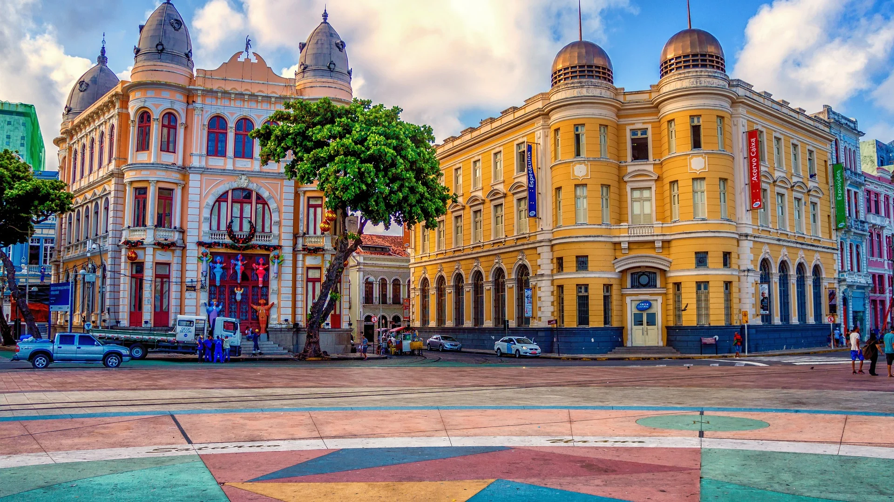

O Marco Zero é um local icônico que simboliza o início de uma cidade vibrante e cheia de história. Localizado no coração da cidade, este ponto turístico oferece uma experiência única ao visitante, combinando arte, arquitetura e significado cultural. É um ponto de encontro popular, onde as pessoas podem admirar monumentos, explorar exposições culturais e sentir a energia pulsante da cidade a partir de seu ponto de partida histórico.

O Marco Zero de Recife é um ponto emblemático que marca o início histórico e cultural dessa cidade vibrante. Localizado no coração do centro histórico, esse marco é mais do que apenas um ponto geográfico - é um símbolo da identidade e da evolução de Recife ao longo dos anos.
O Marco Zero é rodeado por uma praça ampla, onde os visitantes podem apreciar esculturas, fontes e belos jardins, tudo enquanto absorvem a atmosfera única do lugar. A partir desse ponto, é possível vislumbrar a interação entre o rio e o mar, que desempenharam papéis cruciais no desenvolvimento da cidade como um importante porto comercial.
Durante a noite, o Marco Zero ganha vida com iluminação cênica, criando um ambiente mágico para os frequentadores e turistas. Além disso, eventos culturais, apresentações musicais e celebrações frequentemente ocorrem nesse espaço, unindo a comunidade local e os visitantes em uma celebração da cultura pernambucana.
O Marco Zero é, portanto, muito mais do que um simples ponto de referência geográfica; ele encapsula a rica história, a vitalidade cultural e a conexão com o passado e o futuro de Recife.